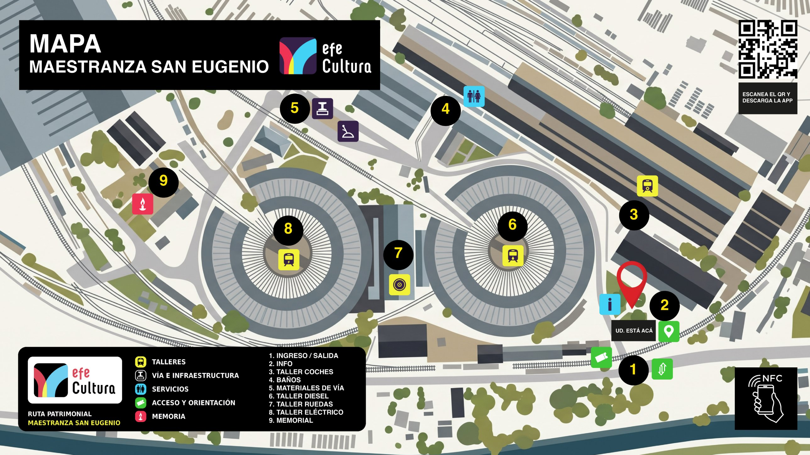
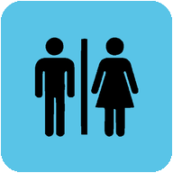
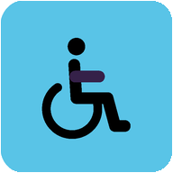
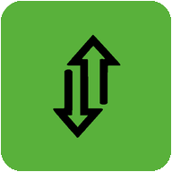

Arrastra para recorrer · toca un número
Recorrido
Ruta
patrimonial
Visita
Informaciones
al visitante
Módulo de informacionesMaestranza San Eugenio EFE · Ruta Patrimonial · Oficinas administrativas (parada 2)

BañosAcceso preferencial adulto mayor y personas con discapacidad (parada 4)

AccesibilidadConsulta en el módulo de informaciones por recorridos accesibles.

Ingreso y salidaAvda. Centenario S/N, Estación Central, Santiago
Horario: 08:30 a 18:30 hrs
Horario: 08:30 a 18:30 hrs
Instala la app
en tu iPhone
- Abre esta página en Safari.
- Toca el botón Compartir (el cuadrado con la flecha hacia arriba).
- Elige Agregar a pantalla de inicio y confirma.
NFC y código QR
Cada placa del recorrido tiene un código QR y una etiqueta NFC. Acerca la parte superior de tu iPhone a la placa, o escanea el QR con la cámara, y se abre la ficha de esa parada.
El color clasifica
Prototipo · Propuesta Oscar Videla · Textos de ejemplo